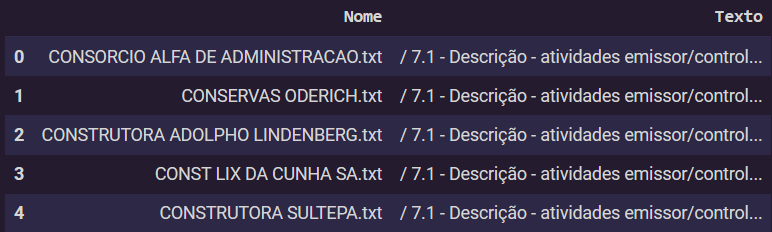
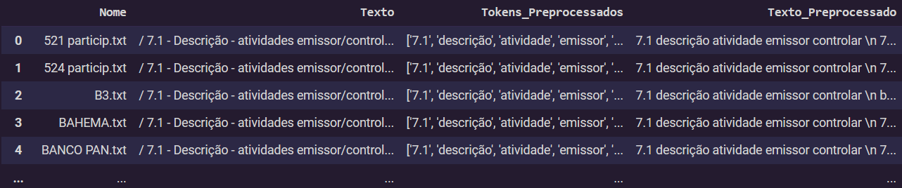
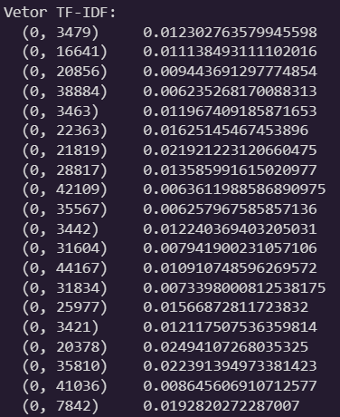
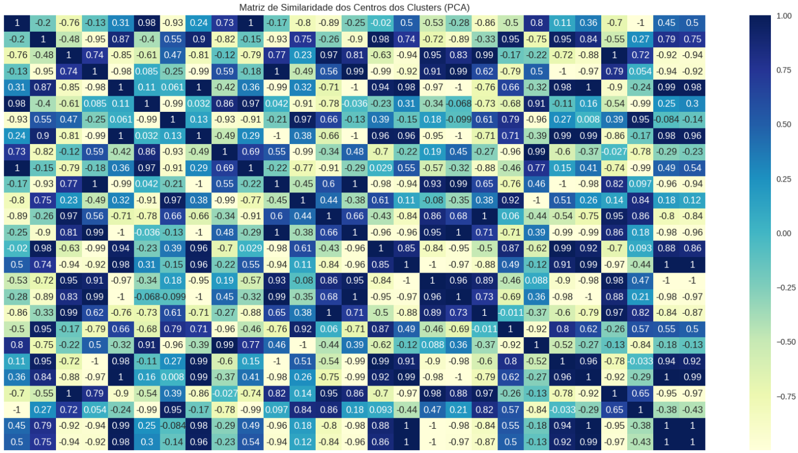

Continuação da Parte I - Dados textuais e previsão de variáveis financeiras.
RESULTADOS E DISCUSSÃO
Partindo para a análise por clusters K-means, carregamos nosso corpus pré-processado anteriormente e salvo como arquivo csv. Contamos inicialmente com duas variáveis, que são a variável “Nome” que é o nome identificador de cada empresa e a variável “Texto” que nada mais é que a descrição das atividades das empresas, como visto abaixo.
Figura 04: Corpus.

Fonte: Elaboração própria (2023).
Depois criamos uma segunda tabela, desta vez com quatro variáveis conforme a “Figura 05: Corpus Pré-processado”, agora com as variáveis “Tokens_Preprocessados” e “Texto_Preprocessado”, essas variáveis são importantes para as próximas etapas e para que não seja necessário pré-processar os arquivos novamente, tarefa esta que demandou cerca de 30 minutos.
Figura 05: Corpus Pré-processado.

Fonte: Elaboração própria (2023).
Para uma compreensão geral no início da análise foi construído “Nuvens de Palavras” para que fosse possível visualizar as palavras mais frequentes em uma amostra dos nossos documentos. Após ter utilizado as nuvens de palavras para também ajudar a construir nosso arquivo de “StopWords” removendo assim estas palavras da nossa análise. Com o “TfidfVectorizer” da biblioteca sklearn, vetorizamos nosso corpus, como pode ser visto na “Figura 06: Vetor TF-IDF” uma parte dos vetores.
Figura 06: Vetor TF-IDF.

Fonte: Elaboração própria (2023).
Em seguida, analisamos através do “Gráfico 01: Top 50 tokens” os cinquenta tokens/palavras mais frequentes em nosso corpus, onde houve uma anomalia que consistiu em que os tokens “de” e “em” que foram postos anteriormente em nossa lista de StopWords, porém estes tokens ainda foram contados na análise, o que pode ter sido uma falha em nosso código. Essa distribuição de frequência nos fornece a frequência de cada item do vocabulário no texto. Como podemos ver considerando as palavras mais representativas para caracterizar a atividade de um setor de empresa em ambiente de bolsa as palavras mais frequentes não chegam a uma frequência de 50x e entre aquelas mais representativas e frequentes estão tokens como “energia”, “serviço”, “produto”, “elétrico”, “crédito”, “financeiro”, “imobiliário”, “distribuição” e “mercantil”.
Gráfico 01: Top 50 tokens.

Fonte: Elaboração própria (2023).
Como citado anteriormente o algoritmo K-means necessita que passemos para ele um número k de clusters, essa escolha é difícil principalmente porque estamos trabalhando com análise não-supervisionada, ou seja nossos dados não estão rotulados, e queremos testar justamente quantos clusters o algoritmo irá entender como ideal e quais empresas o K-means agrupa-rá juntamente como diferentes setores de atuação. Uma das maneiras de fazer isso, mas com algumas limitações, é o “Elbow Method” ou “Método Cotovelo” em tradução livre. Bengfort e Bilbro (2019) apresentaram uma visualização do método “cotovelo” para ajudar os cientistas de dados a selecionar o número ideal de clusters, ajustando o modelo com uma faixa de valores. Se o gráfico de linhas se assemelha a um braço, então o “cotovelo” (o ponto de inflexão na curva) é uma boa indicação de que o modelo subjacente se encaixa melhor nesse ponto.
Sabemos que o número de clusters, que neste trabalho representam setores econômicos em que as empresas estão alocadas, conforme a B3 (2023) é de doze (12) setores econômicos, quarenta e cinco (45) subsetores econômicos e oitenta segmentos de atuação. Já o número de setores econômicos segundo a NAICS é de cento e quatro (104). Logo nosso número de grupos deve se assemelhar a estes números da B3 e também podendo ser comparado aos setores da NAICS. Pelo método cotovelo, temos um número ideal k de grupos igual a seis (6).
Gráfico 02: Método cotovelo para clusterização K-means.

Fonte: Elaboração própria (2023).
Utilizando outro método que é o Silhouette, também chamado de Coeficiente de Silhueta. O Coeficiente de Silhueta é usado quando a verdade fundamental sobre o conjunto de dados é desconhecida e calcula a densidade de clusters computados pelo modelo. O escore é calculado pela média do coeficiente de silhueta de cada amostra, calculado como a diferença entre a distância intra conglomerado média e a distância média mais próxima de cada amostra, normalizada pelo valor máximo. Isso produz uma pontuação entre 1 e -1, onde 1 é agrupamento altamente denso e -1 é agrupamento completamente incorreto (BENGFORT; BILBRO, 2019).
Nossos critérios para selecionar a melhor visualização de cluster são os seguintes, conforme este método:
- Presença de mais aglomerados com pontuações de silhueta acima da média (conforme indicado pela linha tracejada).
- Menos flutuação no tamanho dos gráficos de silhueta (indicando aglomerados mais uniformes).
- Menos pontos negativos, que representam possíveis agrupamentos incorretos.
Assim, usando a função SilhouetteVisualizer da biblioteca python Yellowbrick, vemos que diante dos critérios um bom número de clusters é vinte e sete (27). Comparando entre os dois métodos um bom k estaria entre 5 e 27, como vimos que nos critérios de classificação da B3 o número é bem maior que cinco, utilizamos então o k=27 conforme o coeficiente de silhueta, veja o Apêndice A – Coeficiente de Silhueta “Gráfico 03: Coeficiente de Silhueta” e verificamos na dispersão dos dados como o agrupamento se comportou.
Com o nosso k selecionado, podemos então rodar o algoritmo K-means, mas antes uma técnica comumente aplicada juntamente com o K-means é a decomposição PCA para a redução de dimensionalidade dos nossos vetores, aplicamos então o PCA aos nossos vetores, esta é uma etapa muito importante para nosso resultado. Após rodar o K-means podemos visualizar o resultado conforme o “Gráfico 04: Dispersão dos clusters”.
Gráfico 04: Dispersão dos clusters.

Fonte: Elaboração própria (2023).
Como observado na dispersão dos 27 clusters, há grupos bem condensados e grupos dispersos, os símbolos de “x” representam o centro de cada grupo. Com a análise tem-se no canto superior direito do “Gráfico 04” pontos que representam empresas sobrepostas as quais algumas delas são: Schulz e Tupy que são empresas do setor de autopeças, Telinvest e Zain que são do setor de telecomunicações, além de empresas como a Longdis do setor de administração entre outras empresas além das mencionadas. Tomando este grupo como exemplo, podemos supor que o método de clusterização por K-means nas várias descrições de atividades não se aplica bem, mas vale ressaltar que as descrições também podem não conter com descrições relevantes, ou seja palavras que fazem referência direta às atividades da empresa e que não são tão frequentes em todos os documentos de empresas do mesmo setor conforme a B3 ou NAICS, como vimos no método TF-IDF.
Entretanto empresas do setor elétrico apresentam formulários de referência (FRE) com uma maior quantidade de texto descritivo e com palavras bem mais relevantes em termos de representação do setor, isso mostra que a CVM órgão que normatiza a estrutura da FRE, regula a sua entrega e recebe os formulários juntamente com a B3 podem tomar alguma medida de mudança quanto às normas e critérios de elaboração das FREs para que assim todas as empresas declarem sistematicamente sua atividades ano-ano, atualizando as informações aos investidores. Os pontos no canto superior esquerdo do gráfico mostram o agrupamento dessas empresas do setor elétrico, que conforme a NAICS podem ser empresas: “empresa de eletricidade, gás e água” ou “geração, transmissão e distribuição de energia elétrica”.
Como o objetivo é agrupar as empresas semelhantes em grupos o mais distintos possíveis, é importante entender a similaridade entre os clusters para isso usamos a matriz de similaridade ou mapa de calor com valores entre 1 (maior similaridade) e -1 (menor similaridade) visualizados pelos tons mais escuros e mais claros.
No “Gráfico 05: Matriz de similaridade” podemos notar que os clusters estão bem agrupados da perspectiva da similaridade entre os grupos, já que os valores da matriz variam bastante com relação a 1. Veja o Apêndice A – Coeficiente de Silhueta.
CONCLUSÃO
Neste estudo, exploramos a aplicação de técnicas de Processamento de Linguagem Natural (PLN) e Aprendizado de Máquina (ML) na análise de dados não estruturados contidos em relatórios financeiros anuais de empresas brasileiras. Utilizando o algoritmo K-means, buscamos identificar clusters de empresas com atividades semelhantes a partir das descrições de suas atividades contidas nos Formulários de Referência (FRE) entregues à Comissão de Valores Mobiliários (CVM).
Os resultados obtidos revelam insights interessantes sobre a similaridade das atividades das empresas em diferentes setores. Através da análise de clusters, observamos que algumas empresas do setor elétrico apresentam agrupamentos mais definidos, indicando uma maior concentração de palavras relevantes para esse setor nos seus relatórios. Por outro lado, em alguns casos, a técnica de clusterização não apresentou agrupamentos tão distintos, possivelmente devido à falta de informações descritivas específicas nas atividades declaradas pelas empresas, indicando a necessidade de aprimoramento na consistência das descrições de atividades.
A contribuição deste estudo reside na demonstração da viabilidade do uso de dados não estruturados para identificar padrões e agrupamentos nas atividades empresariais. Além disso, destacamos a importância da qualidade e relevância das informações contidas nos relatórios financeiros, que podem impactar diretamente a eficácia das técnicas de análise. As empresas que fornecem descrições mais detalhadas e específicas sobre suas atividades tendem a se agrupar de maneira mais coesa. E isso pode ter implicações significativas para o mercado financeiro. Consequentemente observou-se que a maioria das empresas mesmo em igual setor usam poucas e diferentes palavras para autodescrição de suas atividades.
Sugestões para estudos futuros incluem a expansão desta abordagem para análises de dados de anos subsequentes, a comparação entre diferentes algoritmos de agrupamento, que possam agrupar de forma melhor que o K-means, bem como a exploração de outras fontes de dados. Além disso, uma análise mais aprofundada das limitações e desafios da análise de dados não estruturados em finanças pode fornecer insights valiosos para futuras pesquisas.
REFERÊNCIAS
B3. Critério de classificação. Disponível em: https://www.b3.com.br/pt_br/produtos-e-servicos/negociacao/renda-variavel/acoes/consultas.htm. Acesso em: 04 jun. 2023.
BENGFORT, B; BILBRO, R. Yellowbrick: visualizing the scikit-learn model selection process. Journal Of Open Source Software, [S.l.], v. 4, n. 35, p. 1075, 24 mar. 2019. The Open Journal. http://dx.doi.org/10.21105/joss.01075.
BUITINCK, L; et al. Scikit-learn: machine learning in python. Journal Of Machine Learning Research. [S. L.], p. 2825-2830. out. 2011.
CAI, F; LE-KHAC, N; KECHADI, M. Clustering Approaches for Financial Data Analysis: a Survey. 2016. School of Computer Science & Informatics, University College Dublin, Ireland, 2016.
GODEIRO, L. L. Ensaios sobre Modelos de Previsão Econômica. 2018. 116 f. Tese (Doutorado) - Curso de Economia, Universidade Federal da Paraíba, João Pessoa, 2018.
HOBERG, Gerard; PHILLIPS, Gordon. Text-Based Network Industries and Endogenous Product Differentiation. Journal Of Political Economy, [S.L.], v. 124, n. 5, p. 1423-1465, out. 2016. University of Chicago Press. http://dx.doi.org/10.1086/688176.
LOUGHRAN, Tim; MCDONALD, Bill. When Is a Liability Not a Liability? Textual Analysis, Dictionaries, and 10-Ks. The Journal Of Finance, [S.L.], v. 66, n. 1, p. 35-65, 6 jan. 2011. Wiley. http://dx.doi.org/10.1111/j.1540-6261.2010.01625.x.
LOUGHRAN, T.; MCDONALD, B. Textual Analysis in Accounting and Finance: A Survey. Behavioral & Experimental Finance eJournal, 2016.
MOLNAR, C. Interpretable Machine Learning: a guide for making black box models explainable. 2. ed. [S. l.]: Lulu.com, 2022. Disponível em: https://christophm.github.io/interpretable-ml-book. Acesso em: 03 jun. 2023.
MORISSETTE, L; CHARTIER, S. The k-means clustering technique: general considerations and implementation in mathematica. Tutorials In Quantitative Methods For Psychology, [S.L.], v. 9, n. 1, p. 15-24, 1 fev. 2013. The Quantitative Methods for Psychology. http://dx.doi.org/10.20982/tqmp.09.1.p015.
NATIONAL INSTITUTE OF STANDARDS AND TECHNOLOGY (NIST). What are outliers in the data? Disponível em: https://www.itl.nist.gov/div898/handbook/prc/section1/prc16.htm. Acesso em: 15 ago. 2023.
PREMEBIDA, S. M. Guia de NLP - conceitos e técnicas. 2021. Disponível em: https://www.alura.com.br/artigos/guia-nlp-conceitos-tecnicas. Acesso em: 15 ago. 2023.
QAISER, S; ALI, R. Text Mining: use of tf-idf to examine the relevance of words to documents. International Journal Of Computer Applications. [S. L.], p. 25-29. ago. 2018. Disponível em: https://www.ijcaonline.org/archives/volume181/number1/qaiser-2018-ijca-917395.pdf. Acesso em: 16 maio. 2023.
SINGER-VINE, Jeremy; CONTRIBUTORS, The Pdfplumber. Pdfplumber. 2023. Software. Disponível em: https://github.com/jsvine/pdfplumber. Acesso em: 15 ago. 2023.
SPACY. Industrial-Strength Natural Language Processing: in python. in python. Disponível em: https://spacy.io/. Acesso em: 15 ago. 2023.
TETLOCK, P. C.; SAAR-TSECHANSKY, M.; MACSKASSY, S. A. More than Words: Quantifying Language to Measure Firms’ Fundamentals. Texas Finance Festival, 2007.
UNITED STATES. CENSUS BUREAU. NAICS Update Process Fact Sheet. Disponível em: https://www.census.gov/naics/reference_files_tools/NAICS_Update_Process_Fact_Sheet.pdf. Acesso em: 04 jun. 2023.**
APÊNDICES
Gráfico 03: Coeficiente de Silhueta.


Fonte: Elaboração própria (2023).
Gráfico 05: Matriz de similaridade.

Fonte: Elaboração própria (2023).